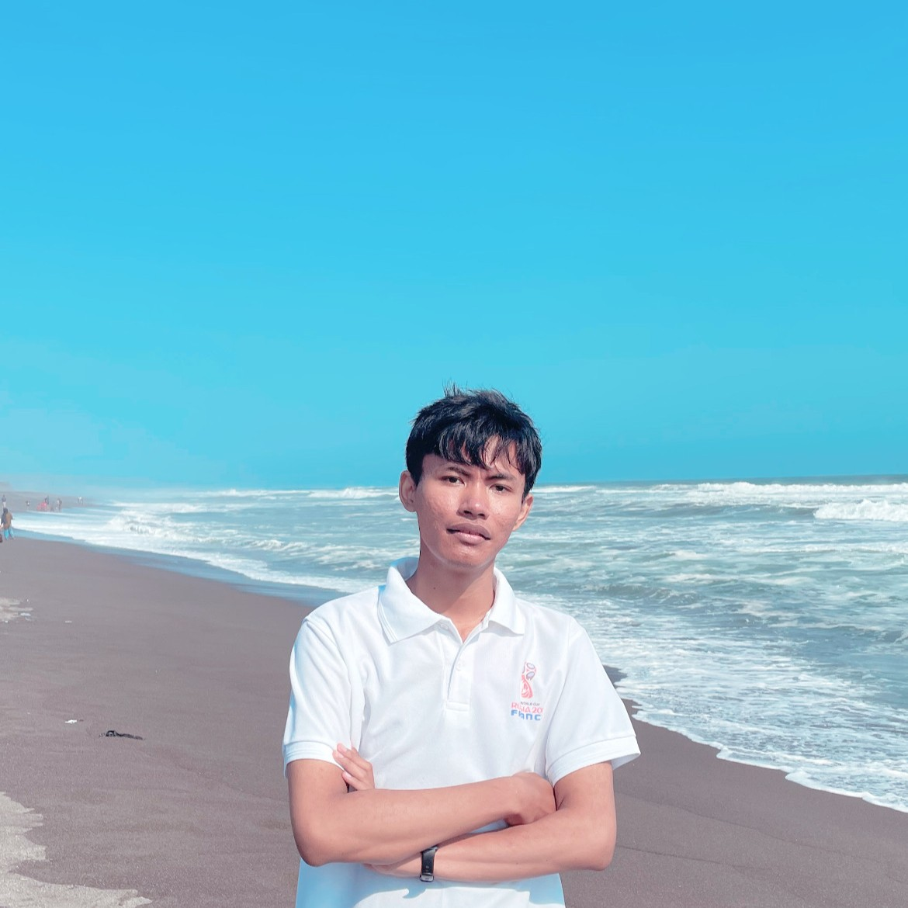

Fresh Graduate Informatika · Cum Laude
Halo, saya Muhammad Taufiq Al Fauzi.
Lulusan Informatika Universitas Amikom Yogyakarta dengan predikat cum laude pada 31 Agustus 2026. Saya berfokus pada full-stack web development dan tertarik menerapkan machine learning untuk analisis sentimen.
GitHub
Informatika · Cum Laude · 2026
01 — Tentang
Teknologi yang berguna, dibuat dengan tujuan.
Saya fresh graduate S1 Informatika dari Universitas Amikom Yogyakarta, lulus pada 31 Agustus 2026 dengan predikat cum laude. Sebelumnya, saya menempuh Rekayasa Perangkat Lunak di SMK Negeri 1 Bantul Yogyakarta.
Pengalaman saya meliputi pengembangan website, asistensi praktikum pemrograman, serta proyek akademik machine learning dan UI/UX. Saya tertarik membangun solusi digital yang fungsional dan mudah digunakan.
02 — Keahlian
Teknologi yang saya gunakan.
Keahlian pengembangan, machine learning, dan perangkat pendukung.
Backend Development
Data & Machine Learning
Tools & Workflow
Keahlian Pendukung
03 — Proyek pilihan
Beberapa hal yang telah saya bangun.
Proyek pengembangan web, machine learning, dan perancangan UI/UX.
E-commerce · Web
Website Toko Akun Game Online
Aplikasi jual-beli akun game online yang dibangun menggunakan Laravel, dengan integrasi Midtrans dalam mode demo untuk proses pembayaran.
Lihat repository PROJECT / 02
PROJECT / 02
Pemesanan tiket · Web
Website Penjualan Tiket Bioskop
Website penjualan tiket bioskop dengan fitur pemesanan dan pembayaran online.
Lihat repository
PROJECT / 03
Skripsi · Machine Learning
Analisis Sentimen Ulasan Game Brawl Stars Menggunakan Algoritma Random Forest
Menganalisis sentimen ulasan game Brawl Stars menggunakan algoritma Random Forest, dengan akurasi 86%.
PROJECT / 04
Proyek akademik · UI/UX
Desain UI/UX Sistem Digital
Merancang UI/UX untuk dua konsep: sistem donasi streamer yang terinspirasi Saweria dan sistem pemesanan kamar untuk satu hotel.
04 — Pengalaman & Sertifikasi
Pengalaman profesional.
Forum Asisten Amikom Sleman
- Membimbing praktikum Pemrograman Lanjut, Pemrograman Web, dan Pemrograman Basis Data.
- Menjelaskan konsep teknis dan membantu mahasiswa mendiagnosis serta memperbaiki kesalahan kode.
- Berkoordinasi dengan dosen dan sesama asisten terkait materi, jadwal, dan penilaian.
PT Global Intermedia Nusantara Yogyakarta
- Membangun dan mengembangkan website profil untuk klien perusahaan.
- Menguji dan mengonfigurasi website agar fitur berjalan sesuai kebutuhan klien.
- Menyusun dokumentasi teknis dan mengikuti standar mutu perusahaan.
Sertifikasi
- Cisco Networking Academy
- Sertifikat Kompetensi Praktik Kerja Lapangan (PKL)PT Global Intermedia Nusantara · 2021
05 — Pendidikan
Landasan perjalanan saya.
2022 — 31 Agustus 2026
Universitas Amikom Yogyakarta
S1 — Informatika · Cum Laude
2019 — 2022
SMK Negeri 1 Bantul Yogyakarta
Rekayasa Perangkat Lunak
06 — Kontak
Mari terhubung.
Terbuka untuk terhubung dan berbincang tentang pengembangan web.
Kunjungi GitHub